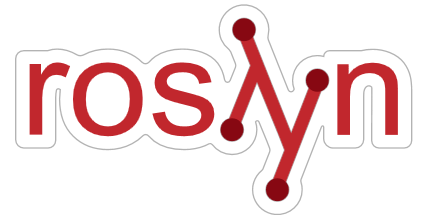

Presents
Under the covers with C#:
From code to assembly
by
James Venning
Wednesday 7th December 2016
12:15 - 1:00pm
Training Room 3
(in HQ - Level 4)
Under the covers with C#:
From code to assembly

C# Deep-dive: What does your code actually become?
A look into what your lambdas and function become under the hood, from IL to Assembly and what that means for performance.
This talk should be approachable enough for all experiences - including novices, while still providing enough technical grit to keep even the hardest developer interested.
James Venning